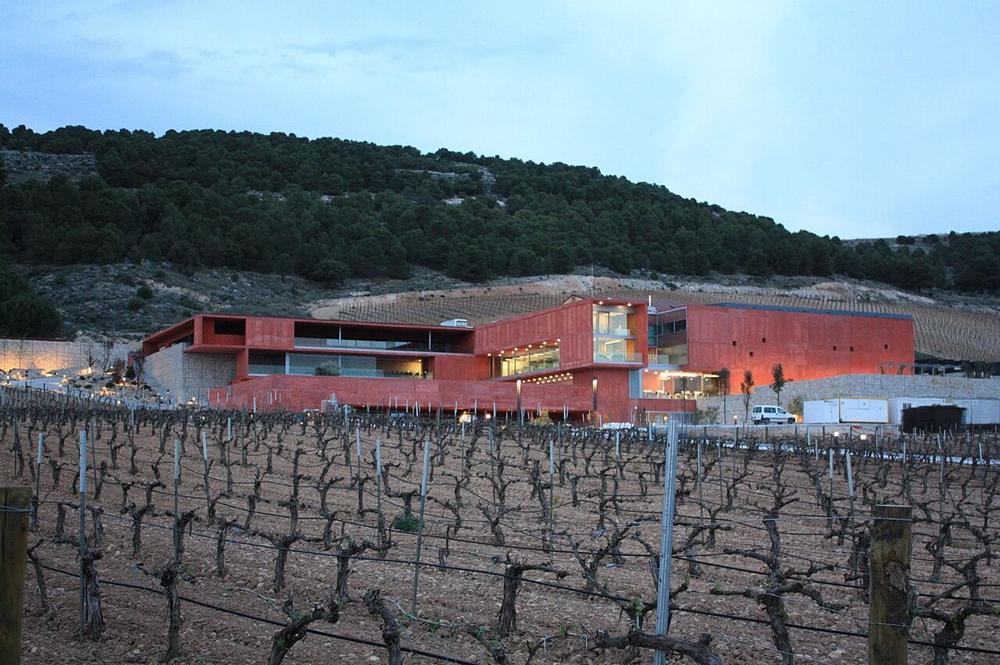

ROUGE
Bodega de Peñafiel créée à la fin des années 1980 par le restaurateur ségovien José María Ruiz, avec ses propres vignes sur les coteaux face au château.

Pago de Carraovejas est né à la fin des années 1980 à l’initiative de José María Ruiz, restaurateur réputé de Ségovie, qui souhaitait élaborer un rouge de Ribera del Duero pensé pour accompagner la cuisine castillane traditionnelle, en particulier l’agneau rôti. Il choisit pour cela un site de coteaux à Peñafiel, dans la vallée du ruisseau Botijas, face au château du village.
Le vignoble de la bodega s’étage sur des pentes aux expositions et altitudes variées, sur des sols calcaires et argileux, ce qui permet de travailler des parcelles aux profils différents. Le cépage principal est le tinto fino (tempranillo), accompagné de cabernet-sauvignon et de merlot dans certains vins.
Avec le temps, la famille a constitué un groupe viticole, connu sous le nom d’Alma Carraovejas, qui comprend des projets dans d’autres régions espagnoles, comme Ossian dans la région de Ségovie, Viña Meín en Ribeiro et des bodegas en Rioja et en Ribera del Duero. Le domaine de Peñafiel abrite aussi un restaurant gastronomique.
Le vin qui porte le nom de la maison, Pago de Carraovejas, est un rouge élevé en barrique au profil mûr et structuré. La gamme comprend aussi des sélections parcellaires produites en petites quantités. Le style cherche à associer la puissance de la Ribera del Duero à la fraîcheur et à la précision.
Elle propose des visites du domaine et de la bodega avec dégustation, ainsi que son restaurant, sur réservation.